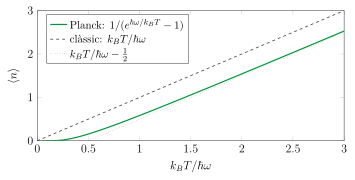
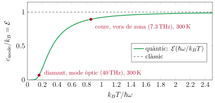
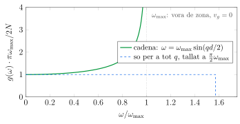
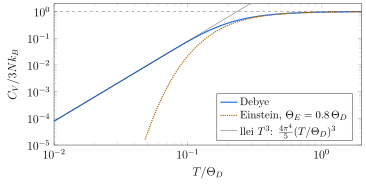
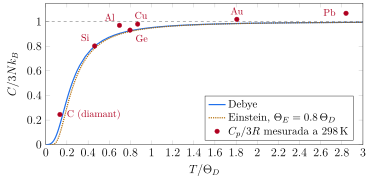
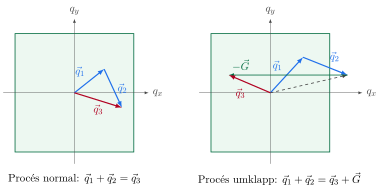

Al Tema 4 hem trobat les freqüències de vibració d'un cristall. En l'aproximació harmònica, el moviment dels àtoms es descompon en modes normals independents, ones planes amb vector d'ona \(\vec q\) dins de la primera zona de Brillouin i freqüència \(\omega_s(\vec q)\), i n'hi ha exactament tres per àtom. Aquest tema fa el pas següent: què passa quan el cristall és a una temperatura \(T\), és a dir, quanta energia hi ha guardada en aquestes vibracions i com es mou d'un lloc a l'altre. Això dona dues propietats tèrmiques que es mesuren a qualsevol laboratori: la calor específica, que diu quanta energia cal per escalfar el cristall, i la conductivitat tèrmica, que diu com de pressa el travessa la calor.
Totes dues tenen una història que va obligar a canviar la física. La calor específica dels sòlids va ser, amb la radiació del cos negre, el primer lloc on la física clàssica va fallar de manera inequívoca, i la seva explicació, d'Einstein el 1907 i de Debye el 1912, va ser una de les primeres aplicacions de la hipòtesi quàntica de Planck fora de la radiació. La conductivitat tèrmica d'un aïllant, en canvi, no s'entén sense una idea que ve de la teoria cinètica dels gasos: el recorregut lliure mitjà.
1.1 Capacitat calorífica i calor específica
Experimentalment el que es mesura és la capacitat calorífica a pressió constant, \(C_p\), perquè és molt difícil impedir que un sòlid es dilati quan s'escalfa. La diferència, que s'estudia a termodinàmica, és \(C_p-C_V=9\alpha^2BVT\), amb \(\alpha\) el coeficient de dilatació lineal i \(B\) el mòdul de compressibilitat del Tema 3. En un sòlid és petita, uns pocs per cent a temperatura ambient (del \(0.1\%\) del silici al \(7\%\) del plom), i la tindrem en compte a la secció 6. Els models d'aquest tema calculen \(C_V\).
1.2 El límit clàssic: la llei de Dulong i Petit
El 1819, P. L. Dulong i A. T. Petit van observar que, si es multiplica la calor específica màssica d'un element sòlid per la seva massa atòmica, surt gairebé sempre el mateix valor: uns \(25\) J/(mol K). La física clàssica ho explica de manera molt directa.
Cada àtom del sòlid està lligat als seus veïns, i per a petits desplaçaments es comporta com una massa unida a molles en les tres direccions de l'espai. El model més senzill, que és el clàssic, tracta cada àtom com tres oscil·ladors harmònics independents, un per a cada direcció, i l'energia de cadascun és
\[\epsilon=\frac{p^2}{2M}+\frac12\,k_{\text{m}}\,x^2 ,\]
amb \(k_{\text{m}}\) la constant de la molla. Totes les energies són possibles, i a temperatura \(T\) la probabilitat que l'oscil·lador en tingui una o una altra és la de Boltzmann.
1.3 El que no quadra
La taula següent mostra la calor específica de diversos elements a \(298\) K. La majoria són a prop de \(3R\), però n'hi ha que en queden lluny, i no són pas casos estranys: el silici és a un \(80\%\) i el diamant, a un \(25\%\).
Pb
Au
Cu
Al
Ge
Si
C (diamant)
\(C_p\) a \(298\) K (J/(mol K))
26.65
25.42
24.44
24.20
23.22
20.00
6.11
\(C_p/3R\)
1.07
1.02
0.98
0.97
0.93
0.80
0.25
Ja el 1875, H. F. Weber havia mesurat que la calor específica del diamant creix molt amb la temperatura i que només s'acosta al valor de Dulong i Petit cap als \(1000\,{}^\circ\)C. I a partir del 1910, quan W. Nernst i els seus col·laboradors van mesurar calors específiques fins a uns \(20\) K, es va veure que la de tots els sòlids baixa cap a zero quan la temperatura s'acosta al zero absolut. Cap d'aquests dos fets no té explicació clàssica: l'equipartició dona \(k_BT\) a cada oscil·lador sigui quina sigui la temperatura.
2 Fonons
2.1 L'oscil·lador quàntic i el fonó
Al Tema 4 hem vist que, en l'aproximació harmònica, l'energia d'un cristall de \(N\) àtoms és la suma de les energies de \(3N\) modes normals independents, cada un amb el seu vector d'ona \(\vec q\), la seva branca \(s\) i la seva freqüència \(\omega_s(\vec q)\). Cada mode és matemàticament un oscil·lador harmònic. La mecànica quàntica diu que un oscil·lador harmònic de freqüència \(\omega\) no pot tenir qualsevol energia, sinó només
\[\epsilon_n=\left(n+\frac12\right)\hbar\omega,\qquad n=0,1,2,\dots \tag{1}\]
És la diferència essencial amb el càlcul de la secció anterior: l'energia d'un mode només pot canviar en salts de \(\hbar\omega\).
Descriure el cristall en termes de fonons és només una manera de dir en quin estat és cada mode: el cristall té \(n_1\) fonons en el mode 1, \(n_2\) en el mode 2, i així successivament. Però és una manera molt útil, perquè permet tractar les vibracions com un gas de partícules, que és el que farem a la secció 7 per entendre com es transporta la calor.
2.2 La distribució de Planck
A temperatura \(T\), un mode de freqüència \(\omega\) no és en un estat definit: la probabilitat de trobar-lo en el nivell \(n\) és proporcional al factor de Boltzmann \(e^{-\epsilon_n/k_BT}\). Aquesta és tota la física que cal per calcular quants fonons hi ha.

La figura mostra els dos límits de (2). Quan \(k_BT\gg\hbar\omega\), \(e^x\simeq1+x+\frac12x^2\) i \(\langle n\rangle\simeq k_BT/\hbar\omega-\frac12\): hi ha molts fonons, i l'energia del mode, \(\hbar\omega(\langle n\rangle+\frac12)\simeq k_BT\), és la clàssica. Quan \(k_BT\ll\hbar\omega\),\(\langle n\rangle\simeq e^{-\hbar\omega/k_BT}\): la probabilitat d'excitar fins i tot un sol fonó és exponencialment petita, i el mode es queda al seu estat fonamental.
2.3 L'energia i la calor específica d'un mode
L'energia mitjana d'un mode és \(\langle\epsilon\rangle=\hbar\omega\left(\langle n\rangle+\frac12\right)\), i la seva contribució a la capacitat calorífica és la derivada respecte de \(T\). Com que \(d\langle n\rangle/dT=(x/T)\,e^x/(e^x-1)^2\),\[c_{\text{mode}}=\frac{d\langle\epsilon\rangle}{dT}=k_B\,\frac{x^2e^x}{(e^x-1)^2}\equiv k_B\,\mathcal E(x),\qquad x=\frac{\hbar\omega}{k_BT} . \tag{3}\]
La funció \(\mathcal E(x)\) és la funció d'Einstein: la calor específica d'un oscil·lador quàntic en unitats de \(k_B\). Val \(1\) quan \(x\to0\) (és el límit clàssic, \(\mathcal E\simeq1-x^2/12\)) i cau com \(x^2e^{-x}\) quan \(x\) és gran.

3 Comptar els modes: la densitat d'estats
3.1 De la suma a la integral
La capacitat calorífica del cristall és la suma de les de tots els seus modes,
\[C_V=k_B\sum_{\vec q,s}\mathcal E\!\left(\frac{\hbar\omega_s(\vec q)}{k_BT}\right),\]
on la suma recorre els vectors d'ona permesos de la primera zona de Brillouin (un per cel·la primitiva, Tema 4) i totes les branques. Com que \(\mathcal E\) només depèn de la freqüència, no cal saber quin vector d'ona té cada mode: n'hi ha prou de saber quants modes hi ha a cada interval de freqüència.
Tota la informació sobre el material entra a través de \(g(\omega)\), i tota la dependència en la temperatura, a través de \(\mathcal E\). La calor específica és, doncs, la densitat d'estats “vista” a través de la finestra \(\mathcal E(\hbar\omega/k_BT)\), que deixa passar els modes amb \(\hbar\omega\lesssim3k_BT\) i tapa la resta.
3.2 Una dimensió
A la cadena monoatòmica de \(N\) àtoms del Tema 4, de longitud \(L=Nd\), les condicions de contorn periòdiques permeten els vectors d'ona \(q_m=2\pi m/L\): un cada \(2\pi/L\), és a dir, \(L/2\pi\) modes per unitat de \(q\). Per a cada freqüència n'hi ha dos, a \(+q\) i a \(-q\), i un interval \(d\omega\) correspon a un interval \(dq=d\omega/|d\omega/dq|\). Per tant
\[g(\omega)\,d\omega=2\,\frac{L}{2\pi}\,\frac{d\omega}{|d\omega/dq|}\qquad\Longrightarrow\qquad g(\omega)=\frac{L}{\pi}\,\frac{1}{v_g(\omega)} .\]
La densitat d'estats és inversament proporcional a la velocitat de grup.

3.3 Tres dimensions
En tres dimensions els vectors d'ona permesos formen una graella uniforme a l'espai recíproc, amb \(V/(2\pi)^3\) punts per unitat de volum (Tema 4): dins de la primera zona de Brillouin n'hi ha tants com cel·les primitives té el cristall. Per a una branca acústica a freqüències baixes, on \(\omega=v_sq\) en totes direccions, el nombre de modes amb vector d'ona de mòdul menor que \(q\) és el nombre de punts dins d'una esfera de radi \(q\),
\[\mathcal N(q)=\frac{V}{(2\pi)^3}\,\frac{4\pi}{3}q^3=\frac{Vq^3}{6\pi^2}
\qquad\Longrightarrow\qquad
\mathcal N(\omega)=\frac{V\omega^3}{6\pi^2v_s^3},
\qquad
g_s(\omega)=\frac{d\mathcal N}{d\omega}=\frac{V\omega^2}{2\pi^2v_s^3} .\]
A freqüències més altes cal tota la relació de dispersió, i els modes es compten numèricament: es diagonalitza la matriu dinàmica del Tema 4 a milers de punts de la zona de Brillouin i es fa l'histograma de les freqüències que surten. La idea és la mateixa que a una dimensió, i el resultat general, \(g(\omega)=\sum_s\frac{V}{(2\pi)^3}\oint dS/|\nabla_{\vec q}\,\omega_s|\), amb la integral sobre la superfície de freqüència \(\omega\), diu el mateix: hi ha més modes on la velocitat de grup és petita.
Carregant la simulació…
Densitat d'estats del diamant, en modes per àtom i per THz (n'hi ha 3 per àtom), calculada diagonalitzant la matriu dinàmica amb un model de forces entre veïns propers (el de Keating, que té en compte l'estirament i la flexió dels enllaços, més una molla entre segons veïns) ajustat a les constants elàstiques \(C_{11}\) i \(C_{44}\) i a la freqüència Raman. En verd, la part de cada interval que contribueix a la calor específica, \(g(\nu)\,\mathcal E(h\nu/k_BT)\); la línia vermella és \(k_BT/h\), la paràbola discontínua és la de Debye amb \(\Theta_D=2230\) K i la línia taronja, la freqüència d'Einstein amb \(\Theta_E=1300\) K. Canvia la temperatura: a \(4\) K només queda en verd la cua de freqüència baixa; a \(1000\) K, gairebé tota la densitat d'estats.
4 El model d'Einstein
El 1907 Einstein va fer l'aproximació més senzilla possible: totes les vibracions del cristall tenen la mateixa freqüència \(\omega_E\). La densitat d'estats és una delta, \(g(\omega)=3N\,\delta(\omega-\omega_E)\), i la integral (4) és immediata.
Els dos límits són els d'un sol oscil·lador. Quan \(T\gg\Theta_E\), \(\mathcal E\to1\) i es recupera Dulong i Petit. Quan \(T\ll\Theta_E\),
\[C_V\simeq3Nk_B\left(\frac{\Theta_E}{T}\right)^2e^{-\Theta_E/T},\]
i la calor específica cau a zero exponencialment. El model contesta qualitativament les dues preguntes de la secció 1: \(C_V\to0\) perquè els modes es congelen, i la temperatura a la qual passa és \(\Theta_E\), que és gran en els materials amb freqüències de vibració altes.
5 El model de Debye
5.1 La freqüència de tall
El 1912 P. Debye va fer l'aproximació oposada a la d'Einstein: totes les vibracions són ones de so. Substitueix la relació de dispersió real per la del medi continu, \(\omega=vq\) per a les tres branques acústiques, i la densitat d'estats per la paràbola (5), que a baixa freqüència és exacta. Però un medi continu té infinits modes, i el cristall només en té \(3N\). Debye talla la paràbola a la freqüència \(\omega_D\) que fa que n'hi hagi exactament \(3N\).
Geomètricament, el tall equival a substituir la zona de Brillouin per una esfera de radi \(q_D=(6\pi^2n)^{1/3}\), que conté un vector d'ona permès per àtom; si el cristall té un sol àtom per cel·la, té el mateix volum que la zona. La \(\Theta_D\) resumeix en un sol valor la rigidesa i la massa del cristall: és alta si el so és ràpid (enllaços rígids, àtoms lleugers) i si els àtoms estan molt junts.
5.2 La calor específica de Debye
Entre aquests dos límits, la integral es calcula numèricament. La taula dona \(C_V/3Nk_B\) en funció de \(\Theta_D/T\); per a \(\Theta_D/T\ge12\), la llei \(T^3\) ja se n'aparta menys d'un \(1\%\).
\(\Theta_D/T\)
\(C_V/3Nk_B\)
\(\Theta_D/T\)
\(C_V/3Nk_B\)
0.25
0.997
3
0.663
0.5
0.988
4
0.503
0.75
0.972
5
0.369
1
0.952
6
0.266
1.25
0.926
8
0.138
1.5
0.896
10
0.0758
2
0.825
15
0.0231
2.5
0.746
20
0.0097
5.3 La llei \(T^3\)
A baixa temperatura, amb el límit superior de (9) a l'infinit,
\[C_V=\frac{12\pi^4}{5}\,Nk_B\left(\frac{T}{\Theta_D}\right)^3 , \tag{10}\]
és a dir, per mol d'àtoms, \(C_V=1944\,(T/\Theta_D)^3\) J/(mol K). És la llei \(T^3\) de Debye, que segueixen tots els aïllants a prou baixa temperatura. Dins del model de Debye ja és bona per sota de \(\Theta_D/12\) (taula anterior), però la densitat d'estats real s'aparta de la paràbola abans que la del model, i als materials reals sol caldre baixar per sota d'una cinquantena part de \(\Theta_D\).

La figura compara els dos models en escala logarítmica, amb \(\Theta_E=0.8\,\Theta_D\simeq\sqrt{3/5}\,\Theta_D\), que és el valor que fa iguals les primeres correccions a alta temperatura, \(1-\Theta_D^2/20T^2\) (Debye) i \(1-\Theta_E^2/12T^2\) (Einstein). A temperatures altes són pràcticament iguals; per sota de \(T\approx0.1\,\Theta_D\), la de Debye segueix la recta \(T^3\) i la d'Einstein s'enfonsa.
5.4 La temperatura de Debye
La taula recull la temperatura de Debye d'alguns sòlids, obtinguda ajustant la llei \(T^3\) a la calor específica mesurada a baixa temperatura (la dels elements, del Kittel, capítol 5, taula 1).
C (diamant)
Si
Fe
Al
W
Ge
Cu
NaCl
Au
Pb
Ar
\(\Theta_D\) (K)
2230
645
470
428
400
374
343
321
165
105
92
L'ordre és el que esperaríem de la fórmula (8): el diamant, amb els enllaços més rígids (Tema 3) i àtoms molt lleugers, té el so més ràpid i la \(\Theta_D\) més alta; el plom, amb àtoms pesants i un enllaç metàl·lic tou, i l'argó sòlid, amb l'enllaç de van der Waals, molt feble, les més baixes. A temperatura ambient, el plom és \(2.8\) vegades per sobre de la seva \(\Theta_D\) i és clàssic; el diamant és a \(0.13\,\Theta_D\) i encara és un sòlid “quàntic”.
6 La calor específica real
Els models d'Einstein i de Debye tenen un sol paràmetre cadascun, i la densitat d'estats del Tema 4, cap. Aquesta secció els posa a prova amb les mesures. De la comparació en surten tres coses: què cal treure d'una mesura de \(C_p\) abans de comparar-la amb un model, com depèn de la massa dels àtoms la calor específica per quilogram, i fins on arriba el model de Debye.
6.1 La corba universal
Si el model de Debye fos exacte, la calor específica de tots els sòlids en funció de \(T/\Theta_D\) cauria sobre una mateixa corba. La figura ho comprova amb els valors mesurats a \(298\) K dels materials de la taula de la secció 1, cadascun amb la seva \(\Theta_D\).

L'acord és bo per al silici i el germani, que cauen just sobre la corba. Els metalls queden una mica per sobre, i el plom i l'or, que ja haurien de ser clàssics, superen fins i tot \(3R\). I el diamant queda molt per sobre: el \(25\%\) de Dulong i Petit, quan Debye amb \(\Theta_D=2230\) K en dona un \(16\%\). Cadascuna d'aquestes diferències té una explicació.
6.2 Dulong i Petit per quilogram
La llei de Dulong i Petit és universal per àtom, no per massa. Per quilogram, el límit clàssic és \(3R/M\), amb \(M\) la massa molar, i varia molt d'un material a un altre. En un compost amb \(p\) àtoms per unitat de fórmula, el límit és \(3pR/M_f\), amb \(M_f\) la massa molar de la fórmula.
6.3 \(\Theta_D\) no és una constant
El diamant, que queda tan per sobre de la corba universal, ensenya el límit del model de Debye. La \(\Theta_D\) de la taula és la de baixa temperatura, on Debye és exacte. A \(298\) K, en canvi, la calor específica depèn de tota la densitat d'estats, i la del diamant real té molts més modes a freqüències intermèdies que la paràbola de Debye (figura de la secció 3). Si es busca la \(\Theta_D\) que reprodueix la calor específica mesurada a \(298\) K, surt \(1861\) K, un \(17\%\) més baixa.
Carregant la simulació…
Calor específica del diamant calculada amb la densitat d'estats (verd), amb Debye i \(\Theta_D=2230\) K (blau) i amb Einstein i \(\Theta_E=1300\) K (taronja). El punt és la mesura a \(298\) K. La densitat d'estats, sense cap paràmetre ajustat a la calor específica, passa una mica per sota del punt (un \(11\%\)); Debye amb la \(\Theta_D\) de baixa temperatura, molt més per sota. Passa a escala logarítmica o a unitats per quilogram.
Carregant la simulació…
El mateix en escala logarítmica. A baixa temperatura, Einstein s'enfonsa exponencialment, mentre que la densitat d'estats i Debye segueixen la llei \(T^3\) (recta prima). La corba de la densitat d'estats hi queda un \(7\%\) per sobre perquè les velocitats del so del model de forces donen \(\Theta_D=2184\) K, una mica per sota de la calorimètrica. Prova el botó de la \(\Theta_D\) del so del model: les dues corbes coincideixen a baixa temperatura.
La lliçó és que Einstein i Debye són dues aproximacions de la mateixa fórmula (4): Einstein encerta on dominen les branques òptiques, Debye on dominen les acústiques, i la densitat d'estats completa funciona a totes les temperatures, amb la precisió del model de forces que la dona.
7 La conductivitat tèrmica
7.1 La llei de Fourier
Si una barra té els extrems a temperatures diferents, la calor hi flueix de l'extrem calent al fred. En règim estacionari i per a gradients moderats, el flux de calor (energia per unitat d'àrea i de temps) és proporcional al gradient de temperatura.
Que el flux depengui del gradient, i no de la diferència de temperatura entre els extrems, vol dir que la calor no travessa la mostra en línia recta, sinó que s'hi difon: els portadors d'energia xoquen moltes vegades abans d'arribar a l'altre extrem. Si la travessessin sense xocar, el flux dependria de la diferència de temperatura i no de la longitud de la mostra. En un metall, la major part de la calor la porten els electrons de conducció (Tema 6). En un aïllant, la porten els fonons, i és el cas que estudiarem aquí.
A temperatura ambient, \(K\) va d'uns \(0.03\) W/(m K) per a l'aire fins a uns \(2000\) W/(m K) per al diamant, passant per uns \(1.4\) per al vidre, \(6.5\) per a la sal, \(148\) per al silici i \(400\) per al coure. El diamant, un aïllant elèctric, condueix la calor cinc vegades millor que el coure, i per això es fa servir per dissipar la calor de díodes làser i de components electrònics de potència.
7.2 El recorregut lliure mitjà
Imaginem un gas de partícules que es mouen totes a la mateixa velocitat \(v\) en direccions a l'atzar i que de tant en tant xoquen. Entre xoc i xoc recorren una distància \(\ell_i\) en un temps \(\tau_i\).
Per a un gas de molècules de diàmetre \(d_{\text{m}}\), el càlcul és geomètric. Una molècula que avança una distància \(v\Delta t\) escombra un cilindre de secció \(\sigma=\pi d_{\text{m}}^2\) (la secció eficaç: xoca amb qualsevol molècula el centre de la qual quedi a menys de \(d_{\text{m}}\) de la seva trajectòria). Si hi ha \(n\) molècules per unitat de volum, en aquest cilindre n'hi ha \(n\sigma v\Delta t\), i aquest és el nombre de xocs. Per tant,
\[\tau=\frac{1}{n\sigma v},\qquad \ell=v\tau=\frac{1}{n\sigma}.\]
7.3 La teoria cinètica: \(K=\frac13Cv\ell\)
Ara podem calcular el flux de qualsevol magnitud que portin les partícules: massa, càrrega o energia. Sigui \(A\) la quantitat que porta cada partícula, de manera que \(nA\) és la quantitat per unitat de volum, i suposem que varia al llarg de \(x\).
7.4 Els recorreguts lliures mitjans dels fonons
Dels tres factors de (11), \(C\) i \(v\) es coneixen bé, i el recorregut lliure mitjà es pot deduir de la conductivitat mesurada, \(\ell=3K/Cv\).
\(K\) (W/(m K))
\(C\) (MJ/(m\(^3\) K))
\(v\) (km/s)
\(\ell=3K/Cv\)
Diamant
2200
1.79
13.4
280 nm
Silici
148
1.66
5.9
45 nm
Germani
60
1.70
3.6
30 nm
Safir (Al\(_2\)O\(_3\))
40
3.09
7.2
5.4 nm
NaCl
6.5
1.87
3.0
3.4 nm
Vidre de sílice
1.4
1.6
4.1
0.6 nm
La taula fa la mateixa estimació per a altres aïllants a temperatura ambient, amb la \(C\) mesurada i la \(v\) de Debye (per al vidre, la mitjana (7) de les velocitats mesurades). Els recorreguts van de centenars de nanòmetres al diamant a una distància interatòmica al vidre. En un vidre no hi ha ordre de llarg abast, i les vibracions es dispersen a cada pas: el recorregut lliure mitjà és el mínim possible, i la conductivitat, també. El simulador calcula \(C\) amb el model de Debye, que a \(300\) K dona valors una mica més baixos que els mesurats (al diamant, un terç menys), i per això en treu recorreguts una mica més llargs: al diamant, uns \(410\) nm. La conductivitat del safir depèn una mica de la direcció, i la taula en pren un valor típic.
7.5 Què limita el recorregut lliure mitjà
En un cristall perfectament harmònic, sense defectes i infinit, els modes normals són independents i un fonó viatjaria per sempre sense xocar: el recorregut lliure mitjà i la conductivitat serien infinits. El que els fa finits és tot allò que trenca alguna d'aquestes tres condicions. Hi ha tres mecanismes principals: les col·lisions entre fonons, que venen de l'anharmonicitat; els defectes del cristall, començant pels isòtops; i les vores de la mostra.
Col·lisions entre fonons. Els termes cúbics i d'ordre superior de l'energia potencial (Tema 4) acoblen els modes normals: dos fonons es poden fusionar en un, o un es pot partir en dos. L'energia es conserva, \(\omega_1+\omega_2=\omega_3\), i el moment cristal·lí també, però només llevat d'un vector de la xarxa recíproca:
\[\vec q_1+\vec q_2=\vec q_3+\vec G .\]

El Kittel ho explica amb una analogia. Un procés normal conserva el moment total del gas de fonons, de manera que, si el gas es mou en bloc en una direcció, els xocs normals no l'aturen, igual que els xocs entre les molècules d'un gas no frenen el gas que flueix per un tub sense fricció. Els processos normals redistribueixen l'energia entre els fonons, però no degraden el flux de calor. En un procés umklapp, en canvi, dos fonons que van cap a la dreta en poden donar un que va cap a l'esquerra (figura): el flux es capgira. Els xocs entre fonons que produeixen resistència tèrmica són els umklapp.
Defectes i isòtops. Qualsevol defecte puntual (una vacant, un àtom d'impuresa o, simplement, un isòtop d'una altra massa) trenca la periodicitat que veuen les ones i les dispersa. Els isòtops són inevitables: el silici natural és un \(92.2\%\) de \(^{28}\)Si, un \(4.7\%\) de \(^{29}\)Si i un \(3.1\%\) de \(^{30}\)Si; el diamant, un \(1.1\%\) de \(^{13}\)C. Aquesta dispersió es mesura amb el paràmetre de desordre de massa, \(\Gamma=\sum_if_i(1-M_i/\bar M)^2\), amb \(f_i\) la fracció de cada isòtop, \(M_i\) la seva massa i \(\bar M\) la massa mitjana, i afecta sobretot els fonons de longitud d'ona curta: com en la dispersió de Rayleigh de la llum del Sol a l'aire, que fa blau el cel, \(1/\ell\propto\Gamma\,\omega^4\). Els fonons de freqüència baixa gairebé no la noten. En un aliatge com el Si\(_{1-x}\)Ge\(_x\), el desordre de massa és enorme, i la conductivitat cau molt per sota de la del silici i la del germani purs.
Carregant la simulació…
Conductivitat tèrmica d'un cristall de germani de \(3\) mm, natural (gris) i enriquit al \(96\%\) de \(^{74}\)Ge (verd), segons el model del simulador. A \(300\) K la diferència és d'un \(11\%\); al màxim, d'un factor 4 (les mesures de Geballe i Hull en donen un factor 3). Mou el desordre isotòpic, o tria «molts defectes».
Les vores de la mostra. A baixa temperatura, quan ja no hi ha xocs umklapp i els fonons vius tenen longituds d'ona massa llargues per notar els isòtops, l'únic obstacle que els queda són les superfícies de la mostra. Si són rugoses, cada fonó que hi arriba es dispersa en una direcció a l'atzar, i el recorregut lliure mitjà és de l'ordre de la mida de la mostra, \(\ell\approx L\). Aquest efecte de mida el van descobrir W. J. de Haas i T. Biermasz el 1938, i el mateix any H. B. G. Casimir en va fer la teoria. Com que \(C\propto T^3\) i \(v\) i \(\ell=L\) no depenen de la temperatura,
\[K\simeq\frac13\,C(T)\,v\,L\propto T^3L .\]
7.6 La regla de Matthiessen i la corba \(K(T)\)
Si els mecanismes de dispersió són independents, les probabilitats de xocar per unitat de temps se sumen, i els recorreguts lliures mitjans se sumen en inversa.
Amb aquesta regla i les dependències de cada mecanisme, la forma de la corba \(K(T)\) d'un aïllant ja surt sola.
Carregant la simulació…
Conductivitat tèrmica d'un cristall de silici natural de \(3\) mm segons el model del simulador (verd). Discontínues, el que donaria cada límit tot sol: només les vores (\(\ell=L\), recta \(T^3\)) i sense vores (isòtops i xocs umklapp). El punt és la mesura a \(300\) K, a la qual s'ha ajustat la intensitat dels xocs umklapp; la resta de la corba és una predicció del model. La línia vermella vertical és la temperatura triada.
Els màxims poden ser enormes. Segons el Kittel, el del safir sintètic, cap als \(30\) K, és d'uns \(20\,000\) W/(m K), més alt que el del coure, que és d'uns \(10\,000\) W/(m K). Les mesures en diamant natural de tipus IIa donen un màxim d'uns \(12\,000\) W/(m K) cap als \(70\) K. Un aïllant pur i perfecte, a la temperatura adequada, pot conduir la calor tan bé com els millors metalls.
7.7 La mida importa
A temperatura ambient, \(\ell=45\) nm per al silici. Una capa d'un micròmetre, comuna en microelectrònica, hauria de conduir la calor gairebé igual que el silici massís, i un fil de cent nanòmetres, només una mica pitjor. No és així.
Carregant la simulació…
Silici amb el model del simulador, que dona a cada fonó el seu recorregut. A dalt: recorregut lliure mitjà en funció de la freqüència, limitat per les vores (gris), els isòtops (lila) i els xocs umklapp (taronja); el total (verd) és més curt que tots tres, i l'ombra mostra quins fonons porten la calor. A sota: fracció de la conductivitat que porten els fonons amb recorregut més curt que \(\ell\). Aquest model, que dona a tots els fonons la velocitat del so, en treu a \(300\) K un \(14\%\) per sobre d'\(1\ \mu\)m, menys que el \(40\%\) mesurat. Canvia la temperatura i la mida de la mostra.
Carregant la simulació…
El mateix model per a un fil de silici de \(115\) nm (verd), comparat amb el cristall de \(3\) mm (gris). El màxim baixa de \(5700\) a menys de \(100\) W/(m K) i es desplaça cap als \(170\) K, i a \(300\) K la conductivitat queda en \(79\) W/(m K), el doble de la mesura (uns \(40\)). Canvia la mida de la mostra.